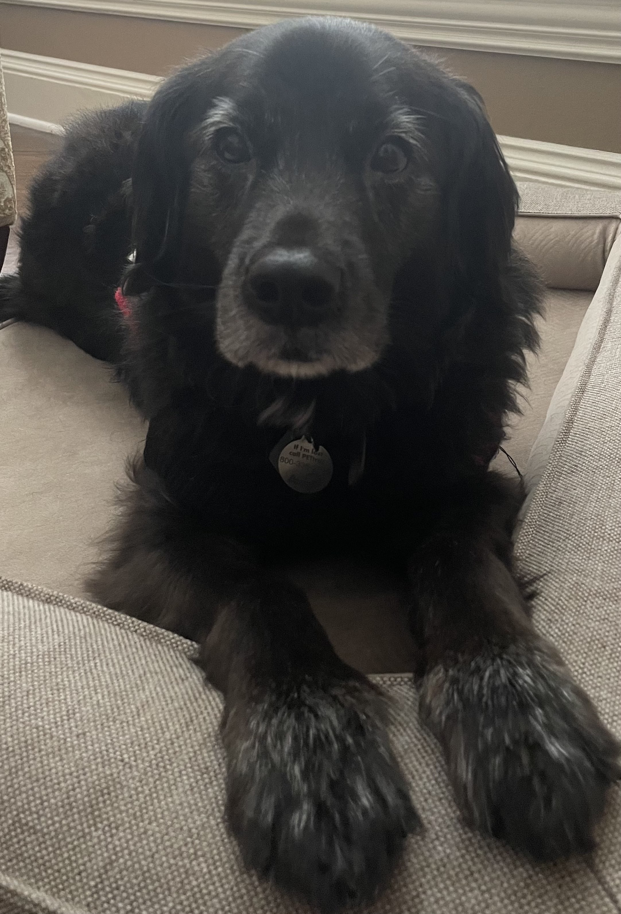
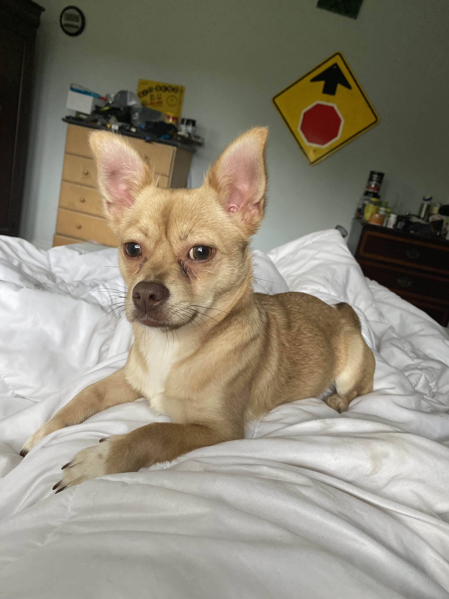

Design & Mascots
The visual inspirations for the sprites and UI elements used throughout my simulations.


Orbital Navigation Mascot
Primary mascot for the Saturn navigation system.


Fluid Dynamics Mascot
Primary mascot for the Navier-Stokes CFD solver.


Solar Dynamics Mascot
Primary mascot for the 3D orbital mechanics propagator.


Reaction-Diffusion Mascot
Primary mascot for chemical concentration models.


Phase Space Mascot
Primary mascot for attractor visualizations.
Legacy Archive Mascot I
Primary mascot for archived dynamical systems simulations.

Legacy Archive Mascot II
Primary mascot for early chaotic system explorations.